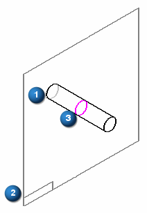

Intersection Curve command
Use the Intersection Curve command to create an associative curve at the intersection of two sets of surfaces. The surface sets can be any combination of reference planes, model faces, or construction surfaces.
An intersection curve is associative to the surfaces it is based on, so the curve updates if either set of surfaces changes.
For example, you can intersect a cylinder (1) with a reference plane (2). The resulting intersection curve (3) can then be used as input for constructing a feature or in a surface trimming operation.
